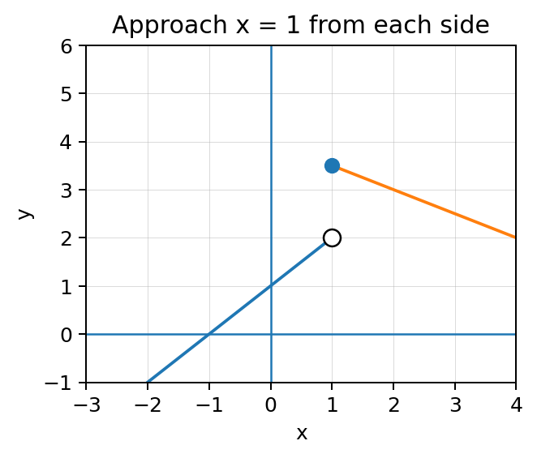
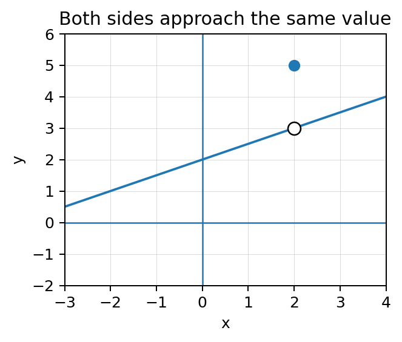

A two-sided limit exists only when the left and right stories agree.
Section Introduction
Approach from one side, then the other
When a graph or table approaches a target input, the direction of approach matters. Values with \(x\lt a\) provide left-hand evidence, while values with \(x\gt a\) provide right-hand evidence.
A two-sided limit is a stronger claim than either one-sided limit. Both sides must approach the same output. If they disagree, the two-sided limit does not exist even if the function itself has a perfectly valid value at the target.
Tables and calculator-generated values can support the same reasoning, but the displayed decimals are evidence—not a proof by themselves.
Always decide what happens from the left and from the right before declaring a two-sided limit.
Vocabulary / Key Notation Preview
left-hand limit · right-hand limit · two-sided limit · DNE
Sort the vocabulary. Write each vocabulary word in the column that best matches what you know right now. You may move a word later.
| Know for sure | Recognize | Don't know yet |
|---|---|---|
Section Preview
Skim before close reading. Look at the headings, tables, graphs, and examples. Find 1–2 things you notice and 1–2 things you wonder about.
| What I noticed | |
|---|---|
| What I wonder |
Close Reading Directions
READ IN SHORT CHUNKS. Annotate the words and visuals together. Underline evidence, circle or highlight bold vocabulary, label arrows or important features, connect sentences to tables and graphs, and jot short questions or connections in the margins. Use these directions through the What's To Come section and the reading that follows.
What's To Come
PREVIEW / DECOMPOSE. Use the connected parts to see where this section is headed. Annotate the representations and prompts as you work.
Use the graph and table for the same function near \(x=1\).

| x | 0.9 | 0.99 | 1.01 | 1.1 |
|---|---|---|---|---|
| f(x) | 1.9 | 1.99 | 3.495 | 3.45 |
Part A
Estimate \(\lim_{x\to1^-}f(x)\).
- Answer: 2.
- Reasoning: Graph and left-side table values approach 2.
- Teaching move / listen for: Have students mark which table inputs are less than 1.
Part B
Estimate \(\lim_{x\to1^+}f(x)\).
- Answer: 3.5.
- Reasoning: Graph and right-side table values approach 3.5.
- Teaching move / listen for: Separate the right-hand path from the filled point discussion.
Part C
Does \(\lim_{x\to1}f(x)\) exist? Justify with one-sided limits.
- Answer: No; DNE.
- Reasoning: The left-hand and right-hand limits are unequal.
- Teaching move / listen for: Require both one-sided values in the justification.
Part D
Which representation—graph or table—makes the disagreement easier for you to see? Explain what evidence you used.
- Answer: Either is acceptable with valid evidence.
- Reasoning: The graph shows separate approach heights; the table shows different numerical trends.
- Teaching move / listen for: Use this to reinforce representation comparison rather than a preferred format.
I Can 1I can determine one-sided and two-sided limits from graphs and tables, including when a limit does not exist.
The left-hand limit \(\lim_{x\to a^-}f(x)\) uses inputs less than \(a\). The right-hand limit \(\lim_{x\to a^+}f(x)\) uses inputs greater than \(a\). The superscript signs describe the direction of approach.
A two-sided limit \(\lim_{x\to a}f(x)\) exists exactly when the two one-sided limits exist and agree. If the left side approaches one value and the right side approaches another, the two-sided limit is DNE.
Whether \(f(a)\) is defined is a separate question. A hole at \(x=a\) does not automatically make the limit DNE.

Example 1: Read one-sided limits
Use the graph below. Estimate the left-hand limit, right-hand limit, two-sided limit, and function value at \(x=1\).
- Answer: Left = 2, right = 3.5, two-sided = DNE, and the filled point gives f(1)=3.5.
- Reasoning: The two sides approach different heights.
- Teaching move / listen for: Have students state the function value last so it does not replace the limit analysis.
You Try It 1: Do not confuse a hole with DNE
Use the graph below to find \(\lim_{x\to2^-}f(x)\), \(\lim_{x\to2^+}f(x)\), \(\lim_{x\to2}f(x)\), and \(f(2)\).
- Answer: Left = 3, right = 3, two-sided = 3, and f(2)=5.
- Reasoning: Both sides approach the open point at y=3.
- Teaching move / listen for: Ask why the filled point does not make the limit DNE.
Stop and Discuss
- What exact condition turns two one-sided limits into a two-sided limit?
- Why can a two-sided limit exist when the function is undefined at the target?
- Answer: The one-sided limits must both exist and be equal; the limit is determined by nearby values.
- Reasoning: Existence of f(a) is not one of the requirements for the limit itself.
- Teaching move / listen for: Use a hole graph as the visual counterexample.
I Can 2I can compare graphical and numerical estimates of the same limit.
Graphical and numerical estimates are two ways to inspect the same nearby behavior. A graph makes direction and shape visible. A table gives precise sampled outputs for selected nearby inputs.
Agreement between the two representations strengthens confidence in an estimate. If they appear to disagree, first check graph scale, table direction, and whether the table samples both sides. A mismatched scale or one-sided table is a common source of error.
Neither representation should be treated as decoration. The task is to use each as evidence for the same mathematical conclusion.
Graph evidence
Trace the curve toward the target from left and right. Read the y-value being approached.
Table evidence
Use x-values progressively closer to the target from both sides and watch the output trend.
If the graph and table are describing the same function, their approach behavior should be consistent.
Example 2: Reconcile graph and table evidence
A graph appears to approach \(y=4\) as \(x\to2\). A table shows outputs 3.8, 3.98, 4.02, and 4.2 for inputs 1.9, 1.99, 2.01, and 2.1. State the limit estimate and explain how the two representations agree.
- Answer: The limit is about 4.
- Reasoning: Both the graph and the table show outputs tending toward 4 from both sides.
- Teaching move / listen for: Require one sentence about each representation.
You Try It 2: Spot a misleading table
A graph suggests \(\lim_{x\to3}g(x)=6\). A student checks only \(x=3.1,3.01,3.001\) and gets values approaching 6. Explain what evidence is still missing before claiming a two-sided limit from the table.
- Answer: Left-hand table values are missing.
- Reasoning: The listed x-values all approach 3 from the right.
- Teaching move / listen for: Have students classify each sample input as left or right of the target.
Stop and Discuss
- What can a graph show more immediately than a table?
- What can a table make easier to quantify than a graph?
- If the two representations appear inconsistent, what should you check first?
- Answer: Graph: direction/shape; table: numerical proximity; check scale, side of approach, and whether they describe the same function.
- Reasoning: The point is coordinated evidence use.
- Teaching move / listen for: Encourage students to name a concrete check rather than saying “look again.”
I Can 3I can use calculator-supported tables as a check on graphical reasoning.
A calculator can generate a table of function values near a target input. This is useful for checking a graphical estimate or exploring a function whose values are difficult to compute mentally.
The input choices matter. Use values on both sides and move them progressively closer to the target, such as \(a\pm0.1\), \(a\pm0.01\), and \(a\pm0.001\). Then describe the pattern rather than treating one decimal display as proof.
Calculator evidence can fail when rounding hides behavior, when the sampling is too far from the target, or when only one side is checked. The mathematical conclusion still comes from the trend.
- Enter the function.
- Choose x-values on both sides of the target.
- Move the x-values closer to the target.
- Record or inspect the output trend.
- State what the values support mathematically.
| x | 1.99 | 1.999 | 2.001 | 2.01 |
|---|---|---|---|---|
| f(x) | 5.9701 | 5.997001 | 6.003001 | 6.0301 |
Example 3: Design a checking table
You suspect \(\lim_{x\to4}h(x)=9\). List four x-values you would enter in a calculator table to check the claim from both sides, with at least two values on each side.
- Answer: Example: 3.9, 3.99, 4.01, 4.1; closer values are also valid.
- Reasoning: The table must sample both directions and values near 4.
- Teaching move / listen for: Ask why 4 itself is not required for checking the limit.
You Try It 3: Interpret calculator evidence
A calculator table near \(x=-2\) gives \(7.1,7.01,6.99,6.9\) as the inputs approach from both sides. What limit does this support? What additional caution should you keep in mind?
- Answer: It supports a limit of 7.
- Reasoning: Outputs approach 7 from both sides.
- Teaching move / listen for: Listen for a caution about finite sampling/rounding and the difference between evidence and proof.
Stop and Discuss
- Why should a calculator table include both sides of the target?
- Why is a displayed decimal trend evidence rather than proof by itself?
- Answer: Both sides are required for a two-sided claim; a calculator only samples finitely many rounded values.
- Reasoning: The reasoning comes from the mathematical behavior, not the device.
- Teaching move / listen for: Use AP language: calculator output should be interpreted, not merely reported.
Vocabulary Reference
| Term | Meaning in this section |
|---|---|
| left-hand limit | The output approached using inputs less than the target. |
| right-hand limit | The output approached using inputs greater than the target. |
| two-sided limit | The common value approached from both sides when the one-sided limits agree. |
| DNE | Does not exist; used when a required limiting behavior fails to settle to one valid value. |
Section Summary
- Read left-hand and right-hand behavior separately.
- A two-sided limit exists only when both one-sided limits agree.
- A missing function value does not by itself make a limit DNE.
- Graphs, tables, and calculator-generated values should support the same limiting conclusion when they describe the same behavior.
What I Understand Now
Describe a graph or table situation in which the function value exists but the two-sided limit is DNE. Then describe a different situation in which the function value is missing but the two-sided limit exists.
Common Mistakes to Watch
| Mistake | What to remember |
|---|---|
| Declaring DNE because there is a hole. | A hole can still have matching one-sided limits. |
| Ignoring one side of the target. | A two-sided limit requires left and right agreement. |
| Reading the filled point as the limit. | The filled point is the function value; trace nearby behavior for the limit. |
| Treating calculator output as proof. | Use the table as numerical evidence and state the mathematical trend. |